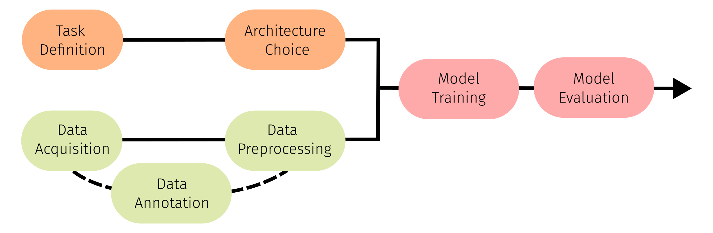

Despite advancements in Computer Vision (CV), Deep Learning (DL) application in Electron Microscopy (EM) labs remains limited. This paper outlines various application areas within EM, and introduces the DEEP-EM TOOLBOX which supports the application and adaption of DL solutions within EM labs. With the help of this DEEP-EM TOOLBOX we aim to bridge the gap between DL experts and EM researchers, while acknowledging the significant potential of DL in enhancing the analysis of EM micrographs. With its proven success in CV tasks, DL can revolutionize EM image analysis through supported, automated, and standardized methodologies. Our primary objective is to foster interdisciplinary collaboration between domain experts and data scientists, addressing differences in terminology and expertise. We therefore introduce this toolbox to compile recent advancements in DL for EM. We believe, as EM is an active and vastly changing field of research a "one-fits-all" model is not applicable. We therefore propose to categorize possible EM specific use cases into three tasks: Image to Value(s), Image to Image, and 2D to 3D. We demonstrate the capabilities of the toolbox by providing three exemplary use cases such as viral particle quantification, cellular structure segmentation, and tomographic reconstruction. The use cases are designed for plug-and-play use by EM researchers, such that they can be easily adapted to new data sets and requirements. We introduce a standardized workflow to implement DL based solutions, such that adaptations to the use cases are more accessible. We encourage contributions from the research community to also make their DL approaches accessible within the toolbox.
More specifically, we
Integrating deep learning into electron microscopy (EM) is particularly challenging due to its interdisciplinary nature. While EM labs possess extensive expertise in data and annotation, deep learning (DL) experts are responsible for model development. In our DEEP-EM TOOLBOX, we aim to bridge this gap by offering user-friendly use cases developed by deep learning researchers. These use cases are designed to be easily adaptable by EM researchers to meet their specific needs. Our approach separates data collection and annotation (where EM labs excel) from model development (which lies with DL labs), empowering EM researchers to train custom models tailored to their specific applications, without requiring coding experience. The only necessary step is adapting the dataset for training. For annotating data for all provided use cases, we recommend using the Computer Vision Annotation Tool (CVAT), a tool well-suited for this task.

The introduced DEEP-EM TOOLBOX follows a generalizable workflow, which we introduce in the following. In our workflow (Figure 1) we propose 3 clusters:
The standardized workflow allows easier access and realization of adaptions to the methods. Additionally, we identify and analyse possible challenges with applying DL to EM data and discuss how to tackle them.
In DL, a task refers to a specific problem or objective that is desired to be addressed. This section will outline the necessary steps for defining tasks, providing a comprehensive foundation for effectively applying DL techniques to EM image analysis. Specifically, within this paper we categorize tasks in the area of EM into three objectives: 1) Image to Value(s), 2) Image to Image, 3) 2D to 3D. Each task defines the nature of the data interactions and the desired outcomes, guiding the development and training of the model to perform effectively on that particular problem.
Even though it is well known that large dataset sizes can drastically improve the performance of DL models, more data does not always equate to better model performance. High-quality data is essential for deriving meaningful correlations between inputs and outputs, providing a strong learning signal. Models must also be robust against artifacts in EM data and generalize across different sampling methods, detectors, and microscopes. Ensuring balanced occurrence and variance within datasets is crucial. Achieving optimal model performance requires balancing data quality, variance, robustness, and dataset size. This is vital because a trained model functions as a black box, making it difficult to correct biases or errors later.
Model training is the process of teaching a DL model to recognize patterns in data by adjusting its parameters to minimize prediction errors. Model evaluation assesses the trained model’s performance on unseen data to determine its effectiveness and generalization capabilities, ensuring that it can accurately predict outcomes in real-world scenarios.
We further encourage contributions from the research community. We ask you to test and use the provided notebooks within your own lab and adapt them to your needs. We appreciate any further contributions of use cases to make them easily accessible to the EM research community.
Please don't hesitate to contact us!
BibTex Code Here